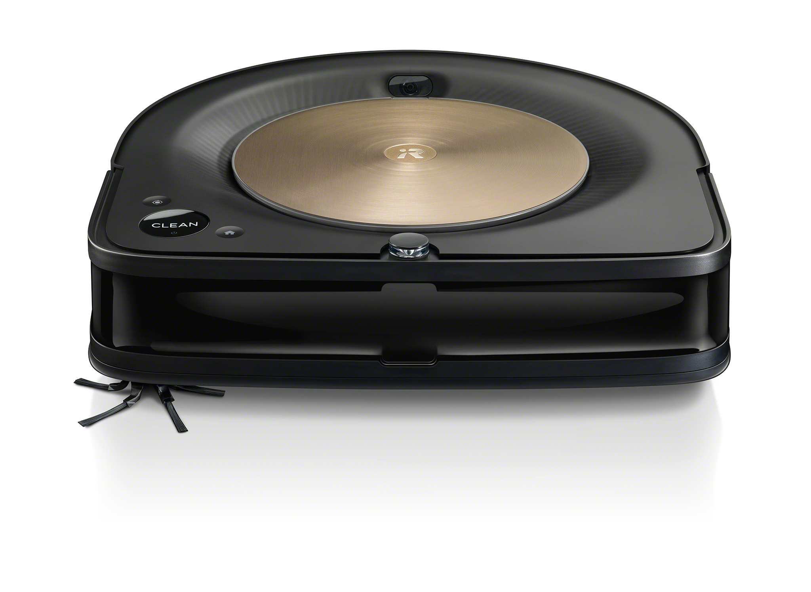
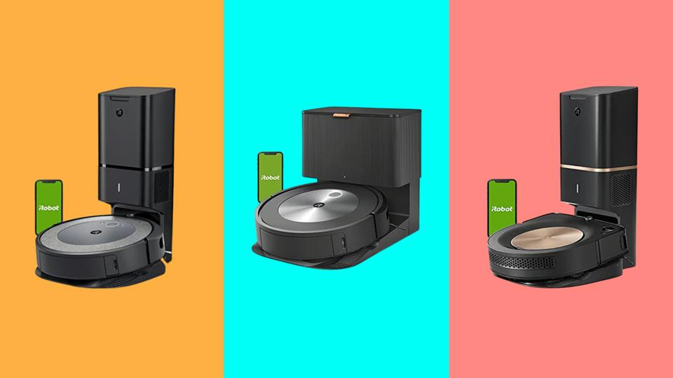

The iRobot Roomba s9 is a top-of-the-line robotic vacuum cleaner among the other top-of-the-line S-series models, such as the iRobot Roomba j7, the iRobot Roomba i3 and the current version iRobot Roomba s9+, the latest version. As the iRobot Roomba s9+ is the latest version with the most advanced features, it is going to be the main focus here. It works fantastically well on many different surfaces, is very well built and moves efficiently on many surfaces.
Explore the working of the iRobot Roomba s9 with our visual demonstration, guiding you through a comprehensive understanding of its functionality as well as the seamles usage of its dedicated App.
The original Roomba was released by iRobot in 2002. Since then, the term "robot vacuum" has come to be associated with the Roomba brand. iRobot consistently maintains its lead in innovation and secures a place in our ranking of the top robot vacuums, despite the entry of numerous other companies onto the market.
The first robot vacuum with a charging port that also emptied the dustbin was the Roomba i7+, which iRobot unveiled in September 2018. In response to user input, iRobot improved the i7+'s functionality and design before releasing the s9+, the company's newest flagship model, in October 2019.
